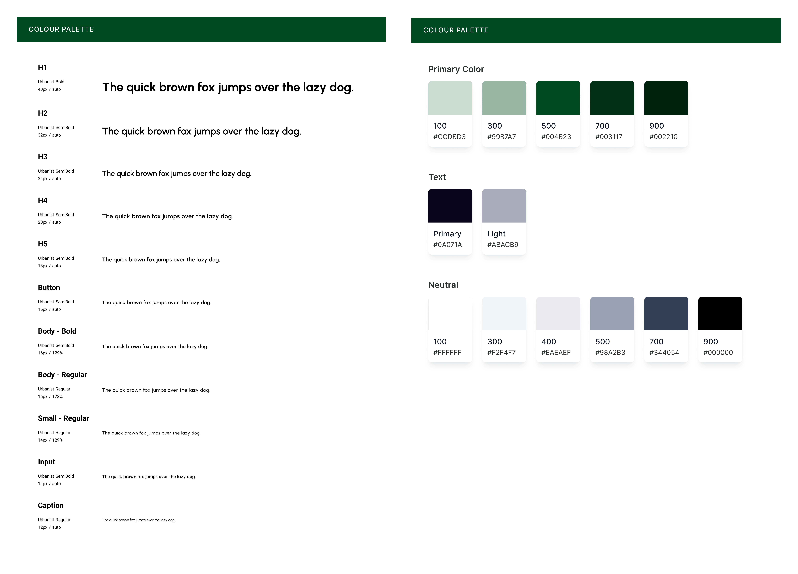
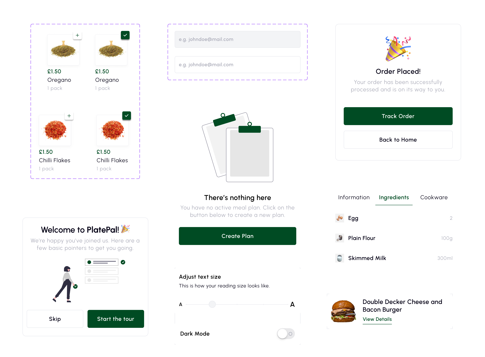
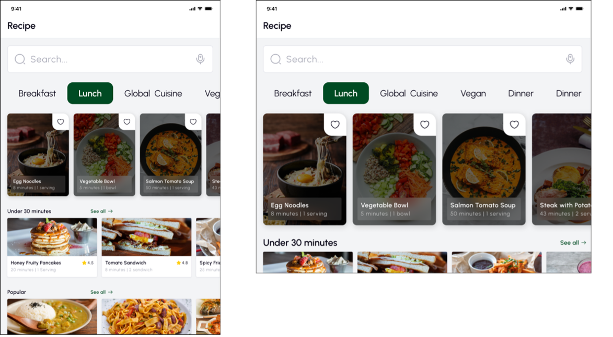
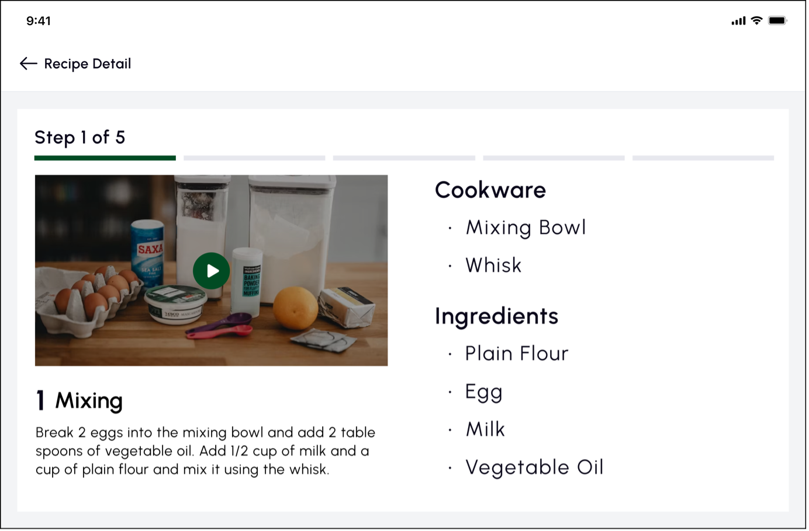
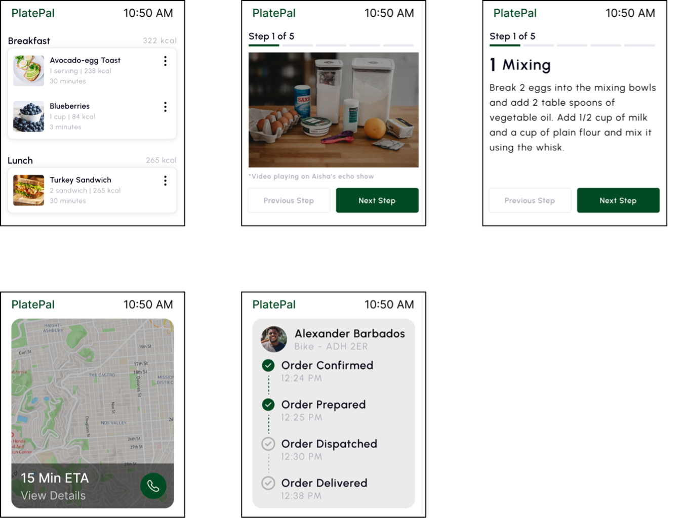

the problem.
According to WHO, 16% of the global population, or one in every six of us has a disabilty. When designing applications, people with disabilities are not fully considered in the design process but rather as an afterthought. Because of this, a lot of people with disabilities struggle when using the web.
project goals.
The goal of this project is to design an application that helps improve the eating habits of users by helping with planning and deciding on what to eat that fits in with their dietary preferences and general health goals, and by putting accessibility first, people with disabilities and the society as a whole benefit from accessible design hereby enhancing usability and overall wellbeing.
sketching.
The main goal of the design was to offer an aesthetically pleasing interface that combined a playful element with practicality to aid users in successfully completing their tasks. Sketches were used to ideate different design solutions and select the most feasible solution.

style guide.


multi-platform accessibility.
The aim of considering various devices for the application is to create an inclusive user experience for people with different gadget preferences and disabilities.
Tablets have larger screens and more interactive capabilities, allowing for a more comprehensive presentation of content. Smartwatches provide a compact and convenient way for users to quickly access information without having to take out their smartphones.
By tailoring the application to the unique characteristics of smartphones, smartwatches, and tablets, users can access, interact with, and enjoy the application regardless of their abilities or the device they use.



reflections.
This project was successful in its goal of developing a more inclusive and accessible mobile app. This project was designed to optimise for accessibility and inclusivity by following a user-centered design process that included personas, scenarios, iterative updates, and adherence to accessibility standards, as well as features that ensured the application was accessible to users with different disabilities.